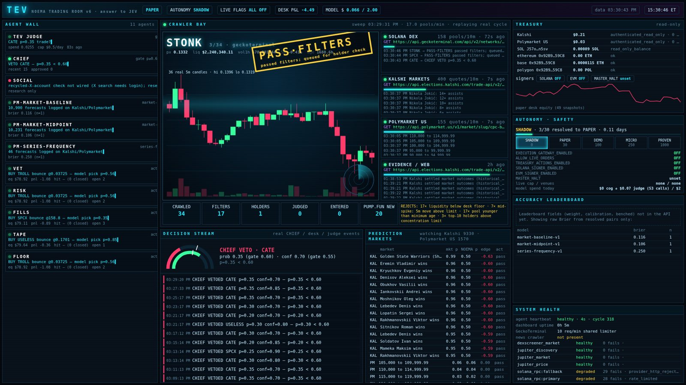
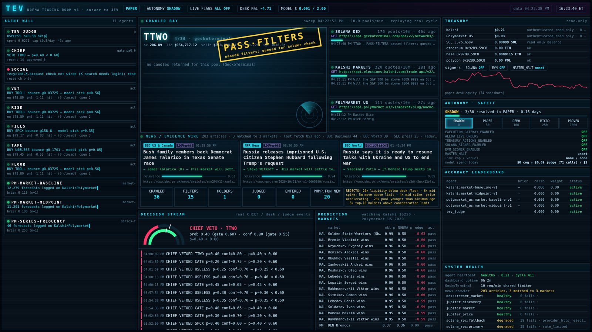
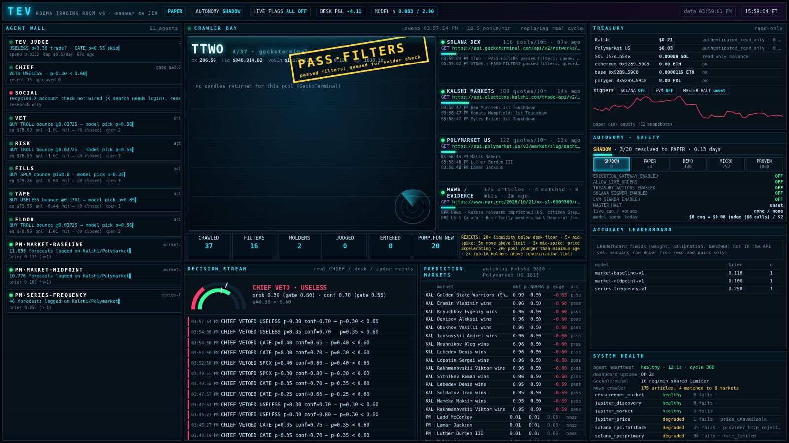
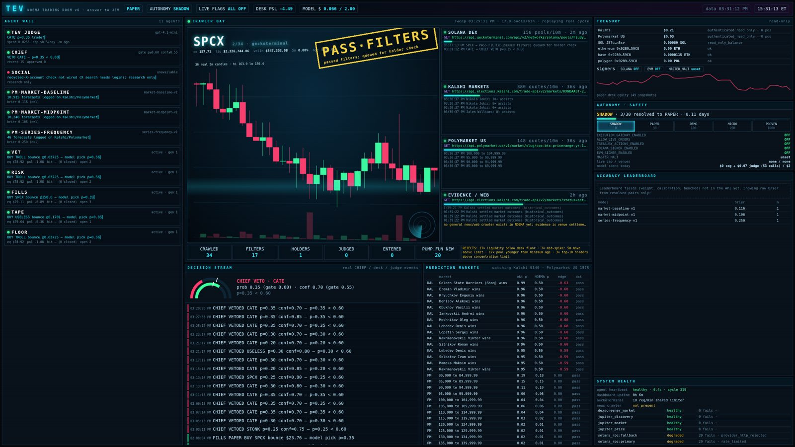
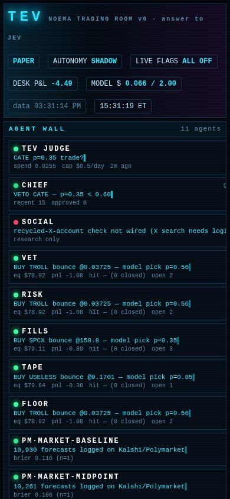

A self-hosted, multi-agent trading terminal built on NOEMA. Crawlers sweep Kalshi, Polymarket US and on-chain markets; specialist agents forecast; every forecast is scored; and nothing touches real money unless a fail-closed gateway, a capital guard and the owner all say yes.
Honest status: TEV runs in paper mode. No NOEMA model beats the market baseline yet, and no profit has been demonstrated.
Live sweeps of Solana DEX pools (GeckoTerminal, DexScreener, pump.fun new pairs), Kalshi and Polymarket US. Candidates flow through filters → holders → judge → entry in a visible funnel, with per-source health.
News & evidence crawler
Primary sources first: BBC, NPR, the Fed, SEC press, CourtListener, GDELT, government data releases, Congress and the Federal Register. robots.txt respected, crawled text treated as untrusted with prompt-injection redaction, articles matched to open markets by category and resolution criteria.
Multi-agent forecasting
Specialist agents (baselines, risk, fills, tape, floor, vet) propose; TEV JUDGE self-checks and skips when its samples disagree; CHIEF can veto. Every resolved forecast feeds a ledger of Brier score, log loss, calibration and EV per agent.
Accuracy-weighted influence
CHIEF weights agents by sample size × measured skill. Agents that stay out of bounds after 30 resolved forecasts are benched. Post-trade reviews write lessons back.
Four desks
Kalshi regulated event contracts
Polymarket US prediction markets
Solana Jupiter swaps via a separate signer
EVM KyberSwap on Ethereum, Base, Polygon
Self-hosted
Runs on your own box with a private, password-protected TEV dashboard and a native Mac app. No cloud custody; keys live only in a separate signer process, never in logs or model context.
02 / HOW THE SAFETY WORKS
Fail-closed by default. Autonomy is earned.
Fail-closed gatewayEvery live flag ships at 0. Missing config, stale data or a failed check refuses the order.
75% rising floorTrading halts if equity falls below 75% of its peak. The floor only ratchets up, and deposits raise it too.
10% daily stopA 10% drop from the day's opening equity halts trading until the owner resets it.
Owner reviewLive trading requires explicit owner-review flags that only the owner sets, plus address pins and a token allowlist (empty refuses all).
Fresh equityNo equity snapshot in the last 15 minutes means no live order.
Edge-scaled sizingQuarter-Kelly within tier caps: 3% per trade, 5% after ≥100 resolved forecasts beating the market, 8% after ≥200.
SHADOW
PAPER
DEMO
MICRO
PROVEN
SELF_FUNDED
EXPANSION
Autonomy ladder: each rung is earned with resolved, scored evidence. No live trading below MICRO, and owner review is still required above it. TEV is currently at SHADOW.
03 / THE TRADING ROOM
TEV v6, captured from a real paper session.
Unedited screenshots from the private dashboard. Numbers shown are paper and read-only balances, not performance.

Full room: agent wall, crawler bay, decision stream, autonomy & safety

News / evidence feed matched to open markets

Crawler bay sweeping venues

1440p layout

Phone layout
04 / ARCHITECTURE
Evidence in. Bounded action out.
Market crawlersKalshi · Polymarket US · DEX poolsNews crawlerprimary sources · untrusted text
NowBuild a scored paper track record: 30 resolved forecasts per desk, focused on news-driven Kalshi and Polymarket markets.
NextBeat the market baseline on calibration. Only then: small owner-approved funding with the floor, daily stop and SOL/ETH/USDC starter allowlist.
LaterScale sizing tiers (5%, 8%) only on 100+ / 200+ resolved forecasts that beat the market. Memecoin desks stay paper until they show positive EV after costs.